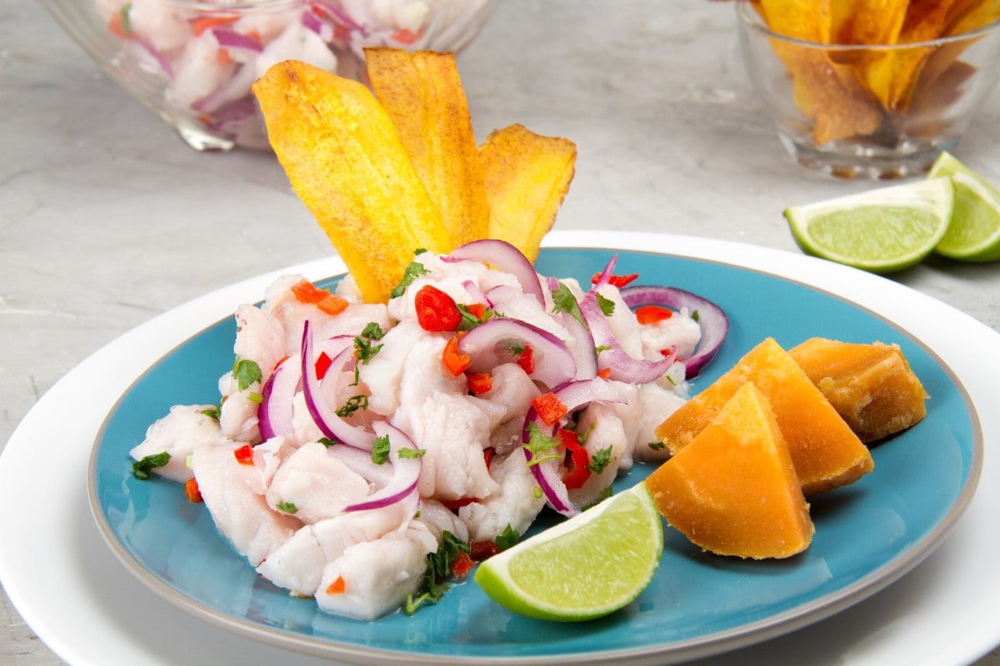

Ceviche Peruano

Description
Peruvian ceviche is a traditional dish widely eaten in Peru. The method of preparing it is different to that of ceviche in other places, using lemon, fish, potatoes and other foods. In Peru, ceviche has been declared to be part of Peru's "national heritage" and has had a holiday declared in its honor.
Ingredients
- Fish
- Salt
- Pepper
- Chopped Cilantro
- A bit of Garlic
- Lime
- Aji (Optional)
- Lettuce
- Sweet Potato
- Corn
- Sliced Onion
Steps
- Cut the fish into 1/2-inch pieces (Bass or Tilapia)
- Add Salt, Pepper
- Chop Fresh Cilantro
- Add garlic and lime juice (Fish has to be cooked in the lime juice)
- Add some Aji (Optional) and mix it with the lime juice
- Add some lettuce on the side as well as peeled & cooked sweet potato
- Add some conr and sliced onion (red onion works better)